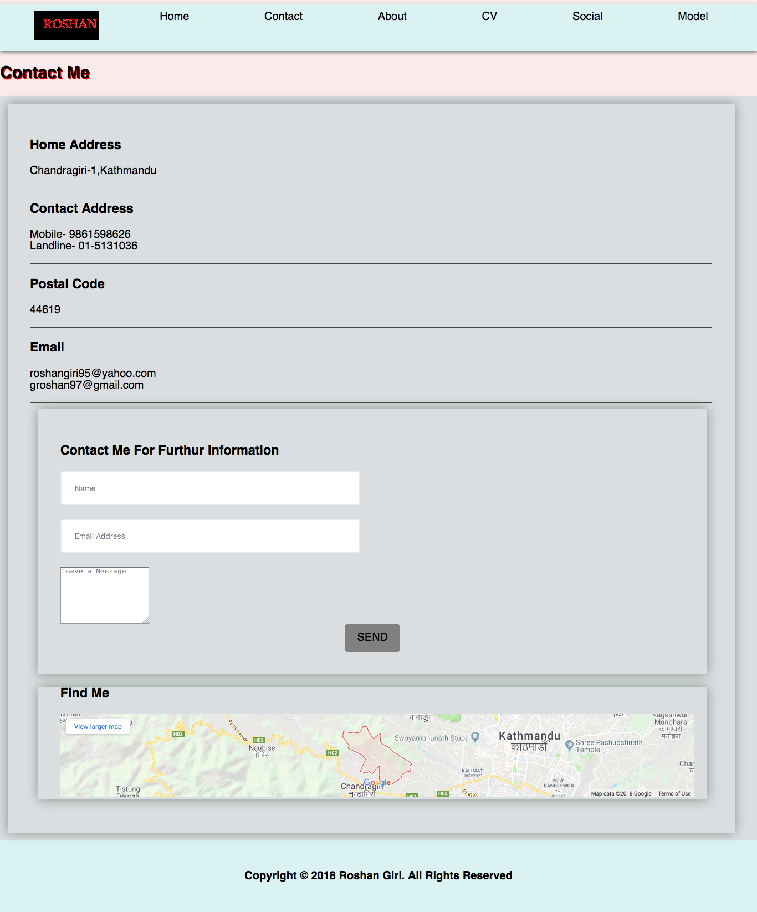

1.Introduction
We are given an assignment from the university. In this assignment we have to make six pages containing index, contact, about, cv, social and model. The index page should be the landing page of the website and should contain links to different other pages.The contact page should include the contact address and google map location of your position.The about page should include your biography and inspiration as a developer. The social page should include the links to your social media. The model page is your report page and should open in another tab.
2.UI Design
UI stands for User Interface Design. The main goal of UI is to make things simpler, attractive and more user friendly. Nowadays UI is used in every sector. It is used in design of vehicles, projets and so on. Due to the development of UI the life of people have become easy and it helps to solve their problem. The do not have to make complex work and through UI complex works can be done in a easy way.Through UI design the pages can be made responsive which means that a webpage can be easily accessible in all devices.
UI have helped me a lot through my assignment. It had made my work easier, faster and more convinient. Through UI design I have used different properties like hover and making my page responsive in all devices.These are some of the websites that I took help to begin my assignment:
http://joel.sh/about
http://www.janmense.de/
3.Groupwork
We have a few member of groups and we discuss our problems within the group.However, we only discuss our problems but we do not share the codes. We discuss about the problems that we were facing during the assignment and we deal how to overcome these problems.The main advantage of groupwork is that the problem can be solved in very short period of time which can be very beneficial for us. But, there is also disvantage of groupwork. One of the disadvantage of groupwork is that the groupmember rely on us everytime they face a problem. They do not try to solve their problems at first. Directly they come to the group and represent their problems.
4.Design
This is the Overall Design of my webpage. It is just the sketch.
A)Wireframes
I)Index page
This is the homepage of the website and it contains links to different other pages. From this page we can go to contact, about, cv, social and model page.
II)Contact page
This is the contact page of my webpage. From this page you can contact me. Also, if you want to know more about me you can email me your message.
III)About Page
This is my about page. This page contains about my introduction, biography and inspiration as a developer.
IV)CV page
This page contains my curriculum vitae and. Personal information is given at the top. This page also contains the qualification and experience of me.

V)Social page
This is the wireframe of my social page. This page contains links to my social media such as Facebook, Instagram and so on.
VI)Model Page
This page opens in new tab. This page contains the report of my assignment.
B)Responsive Wireframes
I)Responsive index page
This is the responsive index page of my webpage.
II)Responsive Contact page
This is my responsive contact page.
III)Responsive About page
This is my responsive About page.
IV)Responsive Cv page
This is my responsive Cv page.
V)Responsive Social page
This is my responsive Social page.
VI)Responsive Model page
This is my responsive model page.
5.Screen Mock-ups
I)Mock-up of Index page
This is my mock-up of Index page. This page contains logo and links to all the pages.
II)Mock-up of Contact page
This is the contact page and contains my contact information and google map of my location.
III)Mock-up of About page
This is the mock-up of my about page. This page contains information about my introduction, biography and inspiration as a developer.
IV)Mock-up of Cv page
This is my curriculum vitae page and contains my personal information, qualification and experience.
V)Mock-up of Social page
This is the mock-up of my social page.
VI)Mock-up of Model page
This is my model page of the website.
6.Responsive Mock-ups
I)Responsive mockup of Index Page
This is the responsive mockup of homepage.
II)Responsive mockup of Contact Page
This is the responsive mockup of contact page.
III)Responsive mockup of About Page
This is the responsive mockup of about page.
IV)Responsive mockup of Cv Page
This is the responsive mockup of Cv page.
V)Responsive mockup of Social Page
This is the responsive mockup of social page.
VI)Responsive mockup of Model Page
This is the responsive mockup of Model page.
7.Navigation Diagram
This is my navigation Diagram. From this navigation you can enter all the six pages.

9.Conclusion
There are six pages to be made in this assignment. All the pages are made and the pages are checked whether they are responsive or not. The evidence of responsive is shown above in the report. The report page contains the wireframes and design of index, contact, about, cv, social and model. Responsive wireframes are also included in this report. Mock-ups of the webpages are taken screenshot and is included in the report. Similarly responsive mock-ups are also made and the evidence can be shown above in the report.
The six pages are also validated and the evidence is shown above in the report. All the information such as loading time is included in the webpage validation.The validation is done through w3 validation.
Before creating these pages many research were done. Many tools,widgets were tested and finally this webpage was created. If the time was long enough than I think I could have make the pages much better.
The first term material was enough to make these pages. We learn about how to put files in github. We learn about Css, creating a form,google material design,css3 and a introduction about javascript. I think that these materials were enough for us to create these webpages.
10.Reference
Brandeps.com. (2018). Brand Logos In Vector EPS Format | BrandEPS. [online] Available at: https://www.brandeps.com/logo/F/Facebook-01-thanks?filetype=zip [Accessed 22 Apr. 2018].
Brandeps.com. (2018). Brand Logos In Vector EPS Format | BrandEPS. [online] Available at: https://www.brandeps.com/logo/I/Instagram-Icon-01-thanks?filetype=zip [Accessed 22 Apr. 2018].
Brandeps.com. (2018). Brand Logos In Vector EPS Format | BrandEPS. [online] Available at: https://www.brandeps.com/logo/P/Pinterest-01-thanks?filetype=zip [Accessed 22 Apr. 2018].
Brandeps.com. (2018). Brand Logos In Vector EPS Format | BrandEPS. [online] Available at: https://www.brandeps.com/logo/G/Gmail-01-thanks?filetype=zip [Accessed 22 Apr. 2018].
Brandeps.com. (2018). Brand Logos In Vector EPS Format | BrandEPS. [online] Available at: https://www.brandeps.com/logo/S/Skype-Icon-01-thanks?filetype=zip [Accessed 22 Apr. 2018].